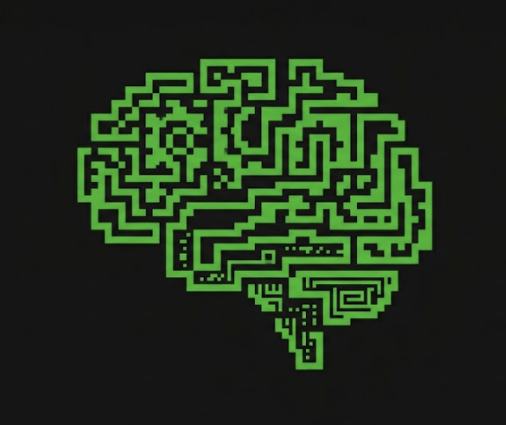

Every time you open a new chat, your AI starts from zero. Open Brain is a database-backed, MCP-connected memory system you own — type a thought in Slack, any AI retrieves it semantically in under five seconds. Forever.

A bot listens on #brain-capture. One sentence — no app switching, no forms. Sentence starters guide clean, structured captures.
The bot fires an HTTP POST to the processing pipeline immediately. Raw text and metadata passed through.
Converted to a 1536-dimension vector. AI assigns type, topics, people — zero manual tagging.
Thought, metadata, and vector land in Postgres. pgvector enables cosine similarity search across everything you've ever captured.
Three tools — capture_thought, search_thoughts, list_thoughts — available to any MCP AI client. No platform lock-in.
Every session, Claude queries the brain. It knows your preferences, decisions, domain knowledge. Compounds with every capture.
"The internet is splitting into two worlds — one built for humans, one built for agents. Your knowledge infrastructure needs to live in both."